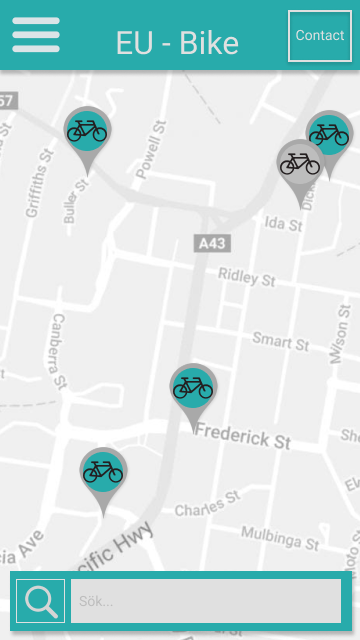
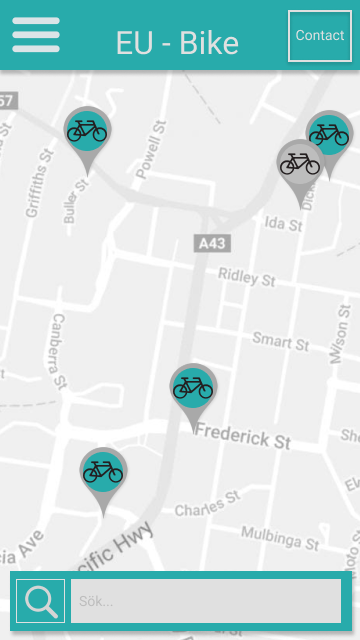

Maya Otterstål
1993-09-23

Welcome!
My name is Maya
I am a designer, an artist, and a nerd
Recent Projects

NoWa - No Waste
School group project
Theme: Sustainable food consumption
User research and design
My role: Design Lead
NärCon recrutement website
Volantary project
Redesigning and adapting to mobile users
In progress

 

EU-Bike
School project
User research and redesign
Contact:
vonmanga@gmail.com